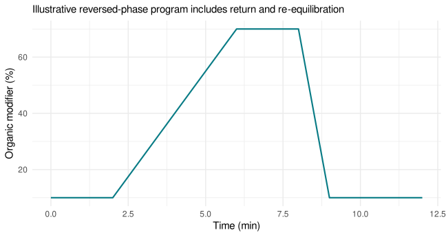
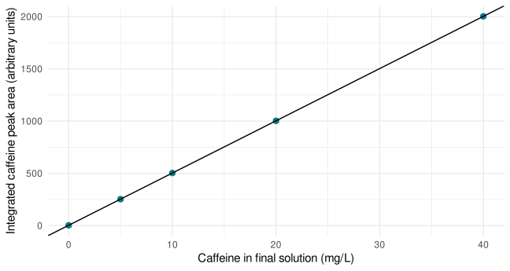
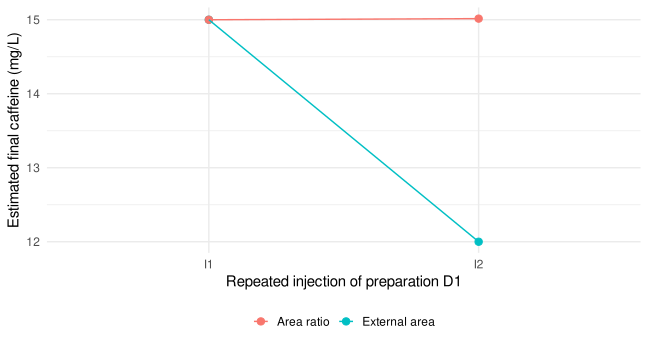
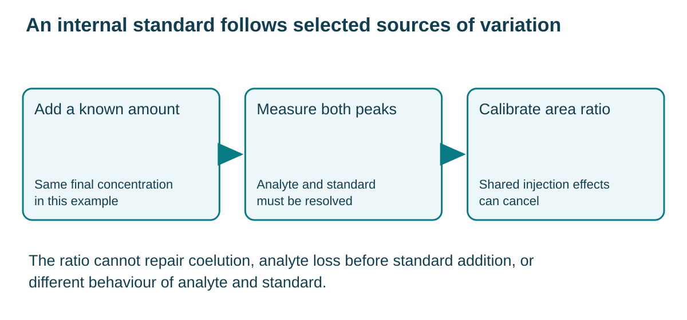
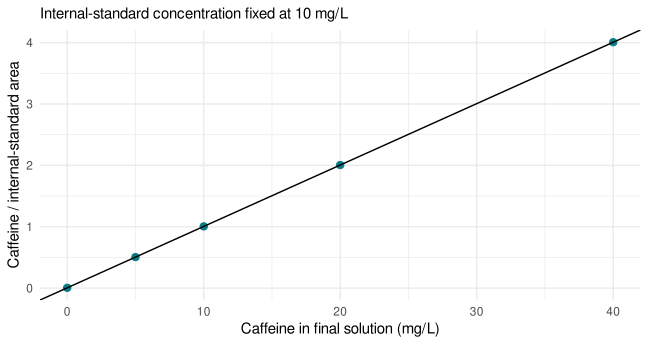
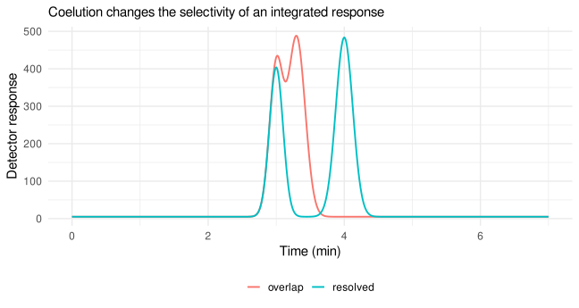
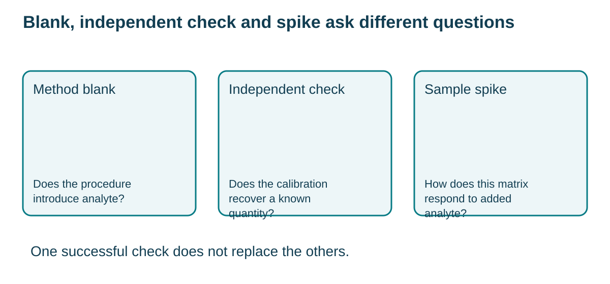

GC and HPLC
Choose a separation, calibrate an area, test a ratio
About this lecture
Choose how an analyte can enter and move through a column.
Then ask which sources of variation an internal standard can actually track.
Follow the GC sample
Carrier gas → inlet → column in an oven → detector.

Volatility concerns what is introduced
Headspace sampling can introduce volatiles above a nonvolatile matrix.
Retention depends on stationary-phase interactions as well as volatility.

Follow the HPLC sample
Solvent reservoirs → controlled flow and injection → packed column → detector.

Reversed phase is an interaction regime
A relatively nonpolar stationary phase meets a more polar mobile phase.
Increasing organic modifier often reduces retention for appropriately retained compounds.

A gradient must include the next starting state
Composition changes during a gradient; an isocratic run holds it fixed.
Return and re-equilibrate before the next injection.

Detection adds another selectivity condition
UV absorption, flame-ionisation current and mass-to-charge signals are different responses.

Calibrate integrated caffeine area
Final-solution standards span 0–40 mg/L.
Area = 3 + 50 × caffeine concentration.

A smaller injection need not mean a weaker vial
Two injections of D1 give external estimates 15.00 and 12.00 mg/L final.

Add a distinguishable internal standard
Every final standard and sample here has 10 mg/L internal standard.
Both peaks must be appropriately resolved.

Calibrate the matched ratio
R=A_{caffeine}/A_{IS}=0.006+0.100c.

Compare the repeated-injection estimates
Ratio estimates: 15.000 and 15.015 mg/L final.
The common injection effect mostly cancels.
Return to the original drink
The preparation factor is 10, giving about 150 mg caffeine/L original.
Timing determines which loss is tracked
A standard added after extraction cannot establish recovery of native analyte through that extraction.

Ratios cannot restore missing selectivity
I3 is unresolved. I4 has failed QC.
Both concentration results are withheld despite calculable areas and ratios.

Encode the chemical decision
reportable <- resolved & qc_pass & in_range

Predict before exploring
Change only injection amount. Then introduce a loss that occurs before a late internal standard.
Which error cancels, and which remains?
Transfer the calibrated ratio
Areas 903 and 600; same IS concentration; original-to-final factor 5.
What amount would you report, and what could still prevent reporting?
Choose the complete method
Volatile solvent mixture versus heat-sensitive nonvolatile solutes.
Exercise and embedded exploration · Practice quiz